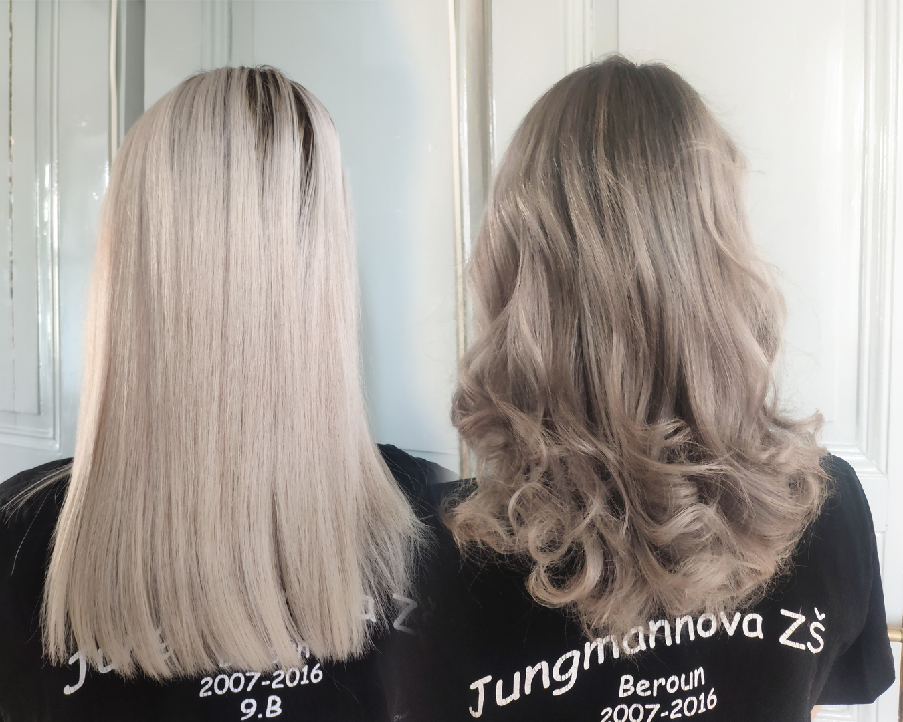

Týna is chapter by her own. She has pretty and healthy hair, which I take care of them with love for a while! On top of that neither of us are scared of change.
Only this year she already tried multiple colors! After all judge for yourself.
Pink peach
Toning the hair to light pink with pastel peach orange it's an ideal combination, where you discourage human eyes from darker uncolored roots.
Black & Grey combo
This time she decided, that she wanted a nice change. And I would gladly fulfill it. She changed her blonde mane for black roots with ironish grey in lenghts.
Hide & Seek
Word "No" means nothing to her and rushes to everything with her head. But so do I. That's why I didn't hesitate and carry out her next wish and that was going back to blond.
I must say it was really hard. Had to uncolor them 2x, then toning them to sand-ish blond color. And add a little bit of pink around the nape.
Back to Brown
This time we added ligher brown on her blonde hair foundation. The goal was to make her hair looks more natural with a little growth. I think it went well.
Dark Violet
We didn't stayed long on natural. Soon rebellion caught up. Týna wished for darker color with purple undercolor, which was really successful. Dark blue was dominating with the shape
of the clients head and purple undercolor gave it a real "šmrnc".
Natalia - Same as Týna a wild person when it comes to hair changes. She doesn't mind changes and welcomes anything, I create on her head. She had red, pink or even icy blond.
Poison Ivy
Firstly we have red. Mission was clear - create the most radiant red, which was possible. And thanks to that I united my forces with decolorizer and red pigment and created a competition
for DC villian Poison Ivy.
Sweet pink
Natalia stayed quite long with red. I was really happy about it, beacause it really suited her. Nevertheless time for a change! Since red is a nuisance on hair we had to decolorized it twice
and after that toning to promised pink.
Cold as Ice
Pink washed out and Natalia said, that we won't go back to that color even if we both liked the color. Time for another change. This time we stayed with blond classic and colored her
head with lighter blond and colder reflection.
Grey is powerful
After lockdown Natalia came back with nicely washed out blond and again we wanted to experiment. That's why I joined hands with overflow from Loreal and created iron-ish
grey color. And what will we do next? That is in the stars.
